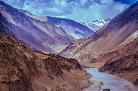
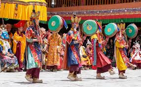

Welcome to Ladakh

Ladakh, often called the “Land of High Passes,” is a region in northern India
known for its dramatic landscapes, Buddhist monasteries, and crystal-clear lakes.
With the Himalayas as its backdrop, Ladakh is a paradise for adventurers, bikers,
and nature lovers.
Culture & Traditions

The culture of Ladakh is deeply influenced by Tibetan Buddhism.
Colorful festivals, prayer flags, traditional dances, and monasteries
like Hemis and Thiksey reflect the rich spiritual heritage of the region.
Ladakhis are known for their warmth and hospitality, and many still follow
age-old customs that bring communities together. Monasteries often act as
centers of learning, spirituality, and social gatherings, while traditional
festivals showcase masked dances, music, and rituals that have been preserved
for centuries. These cultural elements create a unique blend of spirituality,
resilience, and harmony with nature.
Food & Cuisine
Ladakhi cuisine is simple yet nourishing. Staples include Thukpa (noodle soup),
Momos (dumplings), Skyu (wheat pasta dish), and butter tea. The food reflects
the cold desert climate and Tibetan influence.